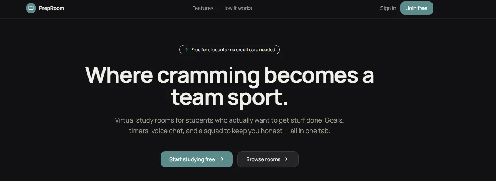
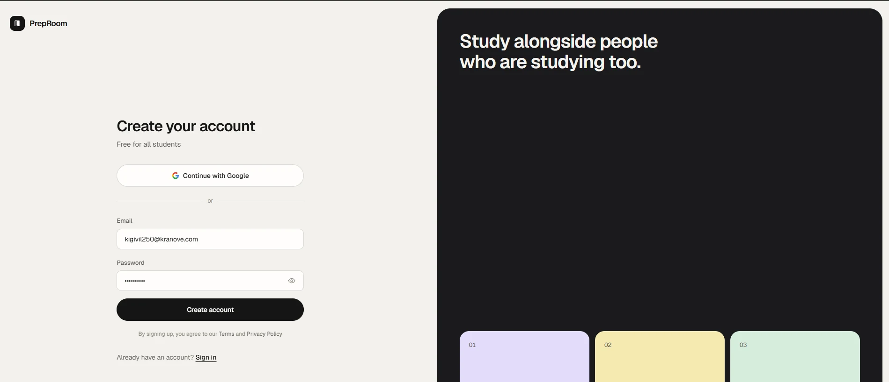
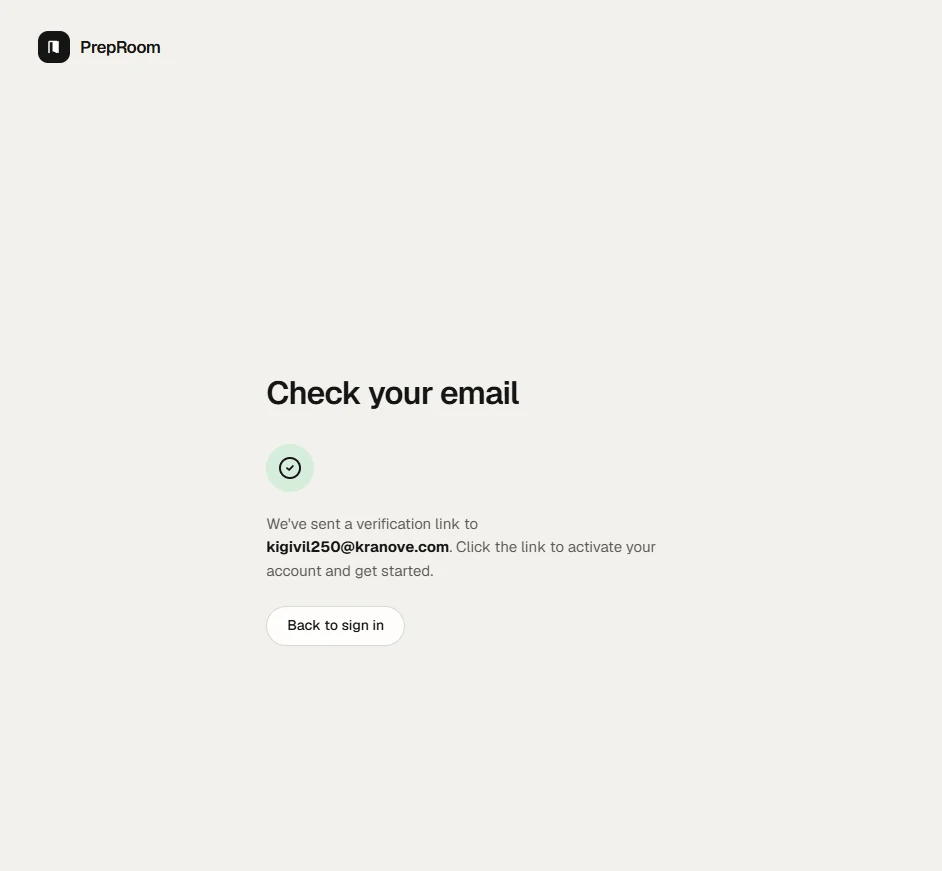
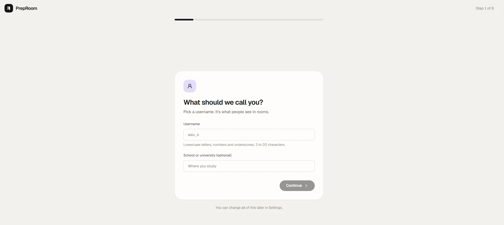
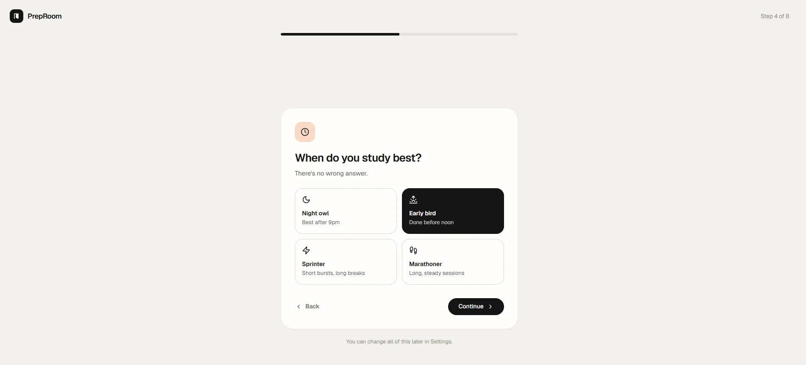
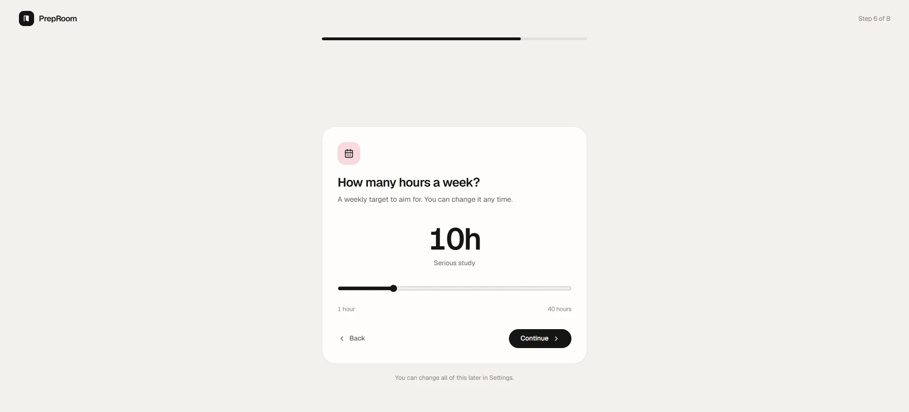
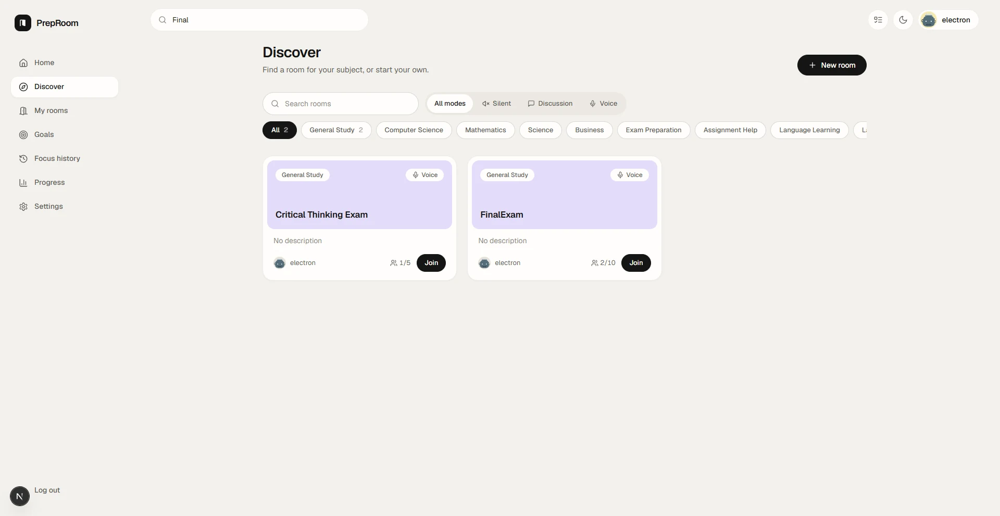
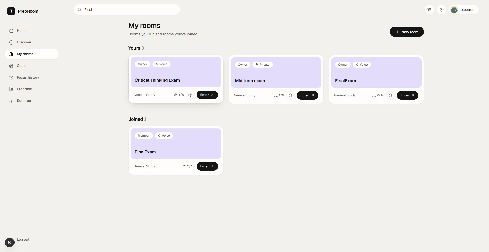
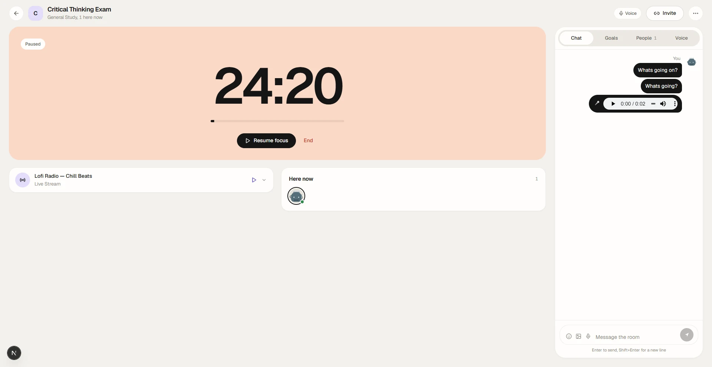
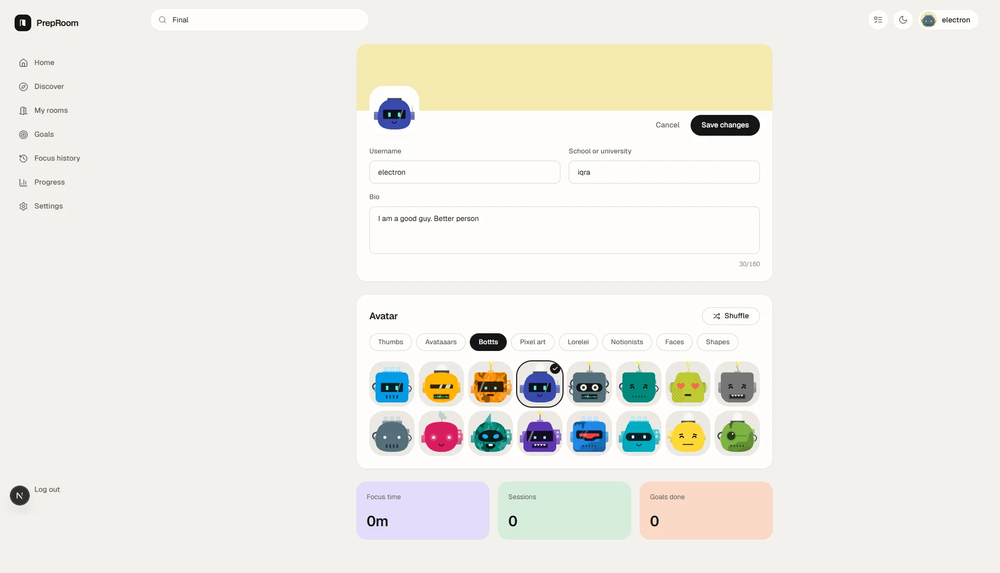

PrepRoom
Study rooms that keep you on the clock. Students join a room, set a goal and focus with others on one shared timer, with chat, a lofi player and optional voice in a calm interface that stays out of the way.
The question
Could body-doubling work as its own product?
PrepRoom started from one product question: what would it take to make body-doubling work as a standalone tool, instead of a feature bolted onto a video call or a chat app? I took it from that question through research, design, architecture and engineering to a fully working product.
The problem
Studying alone is isolating
Students lose motivation without social accountability. Existing tools tend to cover either task management (Notion, Todoist) or social interaction (Discord, FaceTime), but rarely both in a way that actually helps you sit down and focus.
Body-doubling, simply working alongside someone else, is one of the most effective productivity techniques, especially for students who struggle with focus. Coordinating it over Discord calls or Zoom rooms is clunky, because those tools weren’t designed for it. Nothing combined a focused study space with real-time presence, structured timers, goal tracking and optional voice in one place that feels calm rather than overwhelming.
The solution
A shared room with nothing to set up
PrepRoom gives students a shared virtual room where they can see who’s there, what everyone is working on and how long they’ve been focusing, without setting up a call or joining a server.
The core loop is simple: join a room, set a goal, and focus on the shared timer. Everything else layers on top: real-time chat for quick questions, a lofi player for ambience, and voice for rooms that want it. The interface is deliberately sparse. There are no notifications competing for attention and no feed to scroll. Just a timer, your peers and the work.


Getting started
From sign-up to first room in a few taps
Students sign up with Google or with an email and password. Email accounts get a verification link before they can sign in. A first-time setup then asks eight short questions, one per screen, with a progress bar and a note that everything can be changed later in Settings.





Finding a room
Rooms by subject and by mode
Discover lists public rooms with a search box, a filter for how the room works (silent, discussion or voice) and chips for subjects such as Computer Science, Mathematics, Exam Preparation and Language Learning. Each card shows the room’s host and how full it is. My rooms separates rooms you run from rooms you’ve joined, and owners get a settings button on their own rooms. Anyone can start a room with New room, and make it private.


Inside a room
Everything a study session needs, nothing more
Shared focus timer
A Pomodoro-style timer with configurable focus and break lengths. Its state syncs in real time across the room, so everyone sees who is focusing and who is on a break. The timer is the biggest thing on the screen: large numbers, a thin progress bar, and a panel that changes colour with the state, lavender while focusing and peach when paused.
Real-time presence
“Here now” shows who is in the room and their status (studying, on break, in voice, away). Updates are pushed through Supabase Realtime, so the list stays current without polling.
Room goals
Students set goals for the session, such as “Finish the chapter 4 problem set”, and tick them off as they go. A light sense of progress, shared with the group.
Chat
Real-time chat in each room with emoji, images through Supabase Storage, and short voice notes. Messages appear instantly for everyone connected.
Voice
Optional per-room voice powered by LiveKit. Members join with one click, the current speaker is highlighted, and mute and leave controls are always within reach.
Lofi player
A built-in live lofi stream sits under the timer, with play, pause and volume.
Invites
An Invite button in the room header copies a link, so a friend can come straight into the room.
Room administration
Room owners can manage and remove members, switch a room between public and private, and change its settings. The server rejects admin actions from anyone else; the button isn’t simply hidden.
Tasks, history and progress
A personal task list opens from the top bar. Focus history and Progress in the sidebar show past sessions, focus time, goal completion and streaks, with charts built in Recharts from data in Supabase.


How it’s built
Server-checked by default
Every sensitive action is validated on the server. Sending messages, controlling timers, changing roles and joining private rooms all go through Row Level Security policies and API route checks. The front end never relies on hidden buttons for security.
| Part | Tools |
|---|---|
| Framework | Next.js 15 with the App Router and TypeScript. Server Components by default, with client components only where interaction needs them. |
| Database and auth | Supabase (PostgreSQL). Row Level Security on every table, Realtime subscriptions for presence and chat, and built-in auth with Google sign-in and email verification. |
| Voice | LiveKit for optional per-room voice. Tokens are generated on the server through a protected API route, so the API secret never reaches the browser. |
| Interface | Tailwind CSS for styling, Framer Motion for animation, Radix UI primitives for accessible dialogs, dropdowns and tooltips, and Recharts for analytics. |
| Icons | Lucide icons with a thin, consistent stroke throughout. |
Design system
Warm paper, near-black, and soft pastels
PrepRoom’s visual identity sits between minimal and playful. It’s calm enough for long study sessions but warm enough to feel like a shared space rather than a clinical tool.
The frame is a warm off-white page with slightly lighter cards. Near-black is kept for primary buttons and the occasional dark panel, so the next action is always obvious. Colour comes from a small set of soft pastels that mark states and areas, such as the focus timer, a paused session, sessions and goals. A light and dark theme switch sits in the top bar.
Type and numbers
One sans-serif throughout. Numbers carry the interface: the timer and the statistics are set very large and tight, so the important figure reads from across the room.
Shape
Large rounded cards, pill-shaped buttons and chips, and round avatars keep things soft and approachable. Borders are thin and used sparingly.
Personality
Avatars come in eight styles, from robots to pixel art, with a shuffle button. It gives rooms a bit of character without adding noise to the work area.
Motion
Transitions are short (150 to 200ms) with ease-out curves. Panels slide in and out, and the timer moves smoothly between states. Nothing bounces or overshoots, so motion supports the calm.

Product decisions
The choices that shaped it
Row Level Security without silent failures
Supabase’s RLS is powerful but unforgiving: a table with RLS on and no matching policy silently drops inserts and updates. No error, the data just doesn’t appear. Fixing this meant writing explicit policies for every operation (select, insert, update, delete) on every table, and understanding exactly which user context each policy receives.
Timer sync without drift
Instead of syncing the timer’s current value, I store its start time and duration on the server and let each client work out the time remaining locally. Status changes (focus, break, paused) are broadcast through Realtime subscriptions.
Trust as a product requirement
A study room where a non-admin can kick someone, or where messages leak between rooms, isn’t a room anyone trusts. It was tempting to hide the Kick button and call it done. Instead every admin action is checked by RLS policies and the server. If students are going to study in a shared space, it has to be safe by default, not just safe-looking.
Visual identity as product language
The first version used Tailwind’s default palette, and every element competed for attention. For a product whose whole value is calm focus, that worked against itself. The fix was a restrained system: warm neutrals for the frame, near-black for the one primary action, and soft pastels that only mark states and areas. The palette teaches the interface before the user reads a word.
Voice that degrades gracefully
Voice is optional. If LiveKit isn’t configured, the app shows a notice instead of breaking, and if microphone permission is denied, the interface adapts. Voice is a progressive enhancement, not a core dependency.
Outcome
What I learned
PrepRoom began as a hypothesis, that body-doubling works better as a purpose-built product than as a workaround inside general tools, and ended as a fully working app that supports it. Every feature is there because a real student need called for it, not because a framework made it easy to add.
- Product decisions compoundChoosing real-time presence over polling was a product bet that seeing others study live would drive accountability better than a list of recent sessions. That bet shaped the whole architecture.
- Saying no is harder than saying yesDMs, friend lists, study groups and gamification all sounded good on paper. Keeping the scope to what helps someone sit down and focus meant cutting them so the core experience stayed clear.
- Design is product workThe soft palette, calm motion and sparse layout aren’t surface choices. A study app that feels like a notification-heavy productivity tool would undermine its own purpose. The design system encodes the product’s point of view: calm focus over engagement metrics.
- Progressive enhancement is a product strategyVoice and image sharing are valuable, but a student who just wants to focus shouldn’t need a microphone or a file picker to start. Join, start the timer, study: that loop works with nothing configured.
What’s next: two-factor authentication (API routes written, settings screen in progress), mobile refinements, and deployment to Vercel with a production Supabase instance.